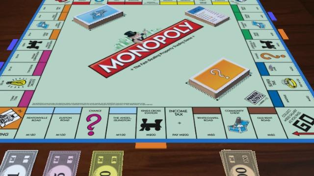

El juego mas vendido de la historia
Antes
Un juego creado con la funcion de servir como herramienta para enseñar las teorías acerca de la justicia social y económica extraída del estudio titulado Progreso y Miseria de Henry George
Monopoly
Comercializado por vez primera en el año de 1935.
A lo largo de 80 años, el juego ha sufrido una notable evolución. Sus múltiples ediciones y sus tantas versiones han dado pie a que se cambiara desde la caja que lo contiene hasta los elementos que lo componen. Logrando mantenerse así como el favorito a través de los tiempos
Ahora
Con los años la finalidad del juego cambió para solo disfrutar un buen rato, negociando propiedades y hasta haciendo uso de medios electrónicos para todas las transacciones que requeire el juego.